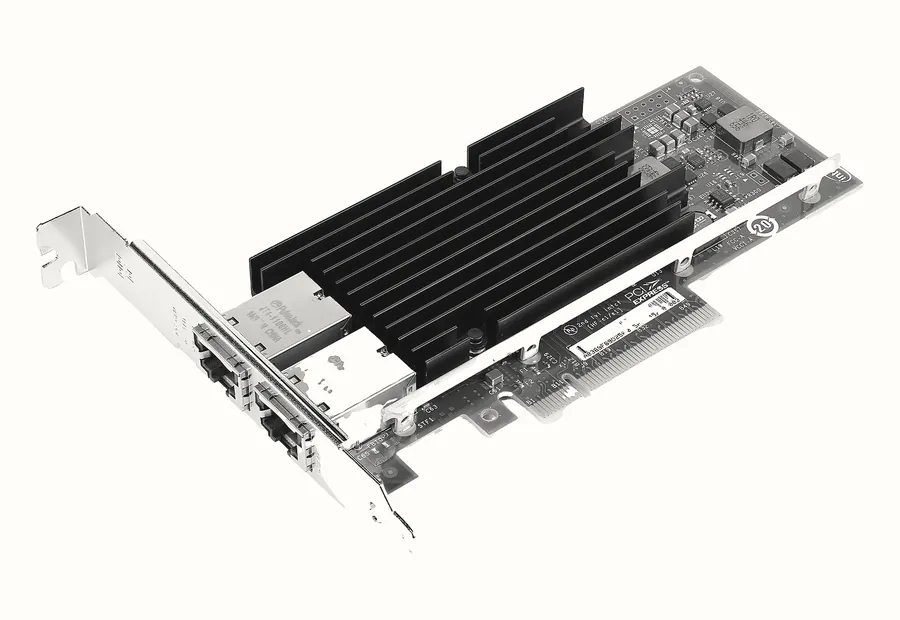
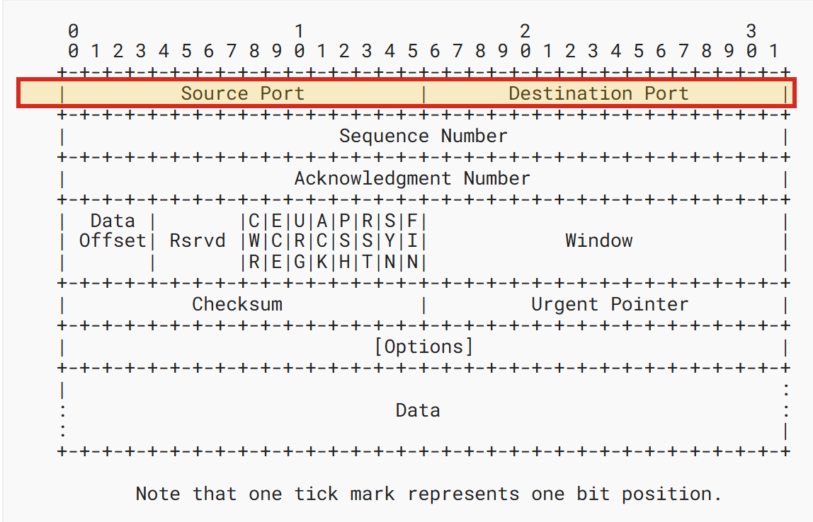
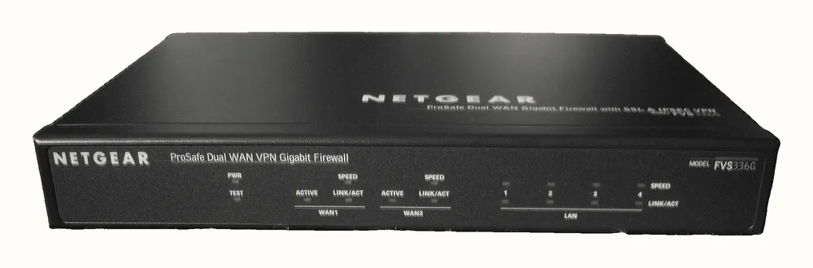
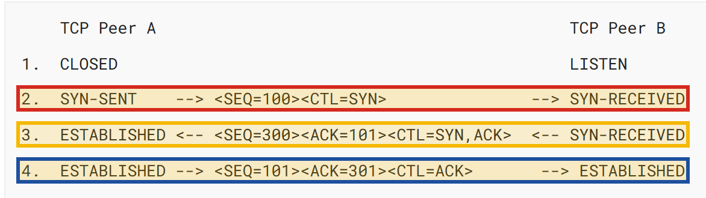

Bài 00 kết thúc ở một câu hỏi (xem lại): App chạy ngon khi gọi bằng localhost:8080 trên chính máy mình, nhưng người khác gọi vào thì không được. Chặng mở kết nối hỏng ở đâu? Trên bản đồ chín chặng, chặng 3 chỉ được tả bằng một dòng: máy người dùng mở một kết nối tới máy chủ. Dòng ấy đủ để vẽ bản đồ, nhưng chưa đủ để sửa lỗi, vì "mở kết nối tới máy chủ" thực ra là hai việc nhỏ hơn: tìm tới đúng máy, rồi trong máy đó tìm tới đúng chương trình. Bài này tách chặng 3 ra thành những mảnh như vậy.
1 Trình duyệt → 2 DNS → [ 3 MỞ KẾT NỐI ] → 4 Mã hoá → 5 Gửi request → …
3a tới đúng MÁY (địa chỉ IP)
3b qua được lớp chặn (firewall)
3c tới đúng CHƯƠNG TRÌNH (port, listen)Bạn chạy app Spring Boot trên laptop, mở http://localhost:8080 thấy trang hiện ra
bình thường, rồi gửi đúng đường link ấy cho đồng nghiệp ngồi bàn bên để họ thử. Họ báo không vào
được. Bạn sửa link thành địa chỉ mạng của laptop mình, họ thử lại: vẫn không được, lần này trình
duyệt còn quay một lúc lâu rồi mới báo lỗi. Code không đổi một dòng nào, app vẫn chạy ngon trên máy
bạn. Vậy cái gì đang sai?
Lúc ấy rất dễ thử lung tung: tắt firewall, đổi port, khởi động lại máy, và nếu may thì một cách có tác dụng mà không ai biết vì sao. Cách thử ấy bỏ qua một sự thật: hai lần thất bại ở trên có hai triệu chứng khác nhau (một lần báo lỗi ngay, một lần chờ lâu), và hai triệu chứng khác nhau thường có hai nguyên nhân khác nhau. Muốn đọc được triệu chứng, cần biết chính xác chặng 3 gồm những gì. Câu hỏi của bài vì vậy là:
App chạy ngon khi gọi bằng localhost:8080 trên chính máy mình, nhưng người khác gọi vào thì không được. Chặng mở kết nối hỏng ở đâu?
Câu hỏi đó được tách thành bốn câu nhỏ hơn, mỗi câu do một tab trả lời:
- Một máy có những địa chỉ IP nào, và vì sao
localhostluôn trỏ về máy của chính người gõ nó? - Trong một máy có hàng chục chương trình, kết nối được giao cho đúng chương trình bằng cách nào?
- Firewall chặn ở đâu, và vì sao phải đủ ba điều kiện thì người khác mới gọi tới được?
- Khi thiếu một điều kiện, triệu chứng trông thế nào, và
refusedkháctimeoutra sao?
| Câu hỏi | Tab | Mảnh của chặng 3 |
|---|---|---|
1. Một máy có những địa chỉ nào, localhost là gì | Địa chỉ IP | 3a — tới đúng máy |
| 2. Kết nối được giao cho chương trình nào | Port & listen | 3c — tới đúng chương trình |
| 3. Firewall, và ba điều kiện | Firewall | 3b — qua được lớp chặn |
| 4. Triệu chứng khi thiếu một điều kiện | Kết nối TCP | cả chặng 3 |
Cần đã học trước
Bài này dùng lại những gì Bài 00 đã giới thiệu, và đi sâu hơn vào đúng chặng 3:
- Bản đồ chín chặng, và vị trí của chặng 3 trên đó — Bài 00, tab Bản đồ.
- URL và hai phần host, port: host là tên máy, port là con số đi sau dấu hai chấm — Bài 00, tab URL.
- DNS đổi tên miền thành địa chỉ IP; mạng chỉ chuyển gói tin tới địa chỉ dạng số, qua các router; TCP là giao thức mở một đường truyền tin cậy giữa hai máy — Bài 00, tab Trên máy người dùng.
curl, công cụ gửi request từ dòng lệnh, đã dùng ở lab Bài 00.
Lần gửi link đầu tiên hỏng vì nó đưa đồng nghiệp tới sai máy. Muốn thấy vì sao,
hãy bắt đầu từ điều Bài 00 đã nói: DNS dịch một cái tên thành một địa chỉ IP, và mạng chỉ biết chuyển gói
tin tới địa chỉ đó. Câu hỏi đầu tiên của bài vì vậy là: một máy có những địa chỉ IP nào, và vì sao
localhost luôn trỏ về máy của người gõ?
Một máy có nhiều địa chỉ IP, không phải một
Trong tình huống mở bài, lần sửa link là thay localhost bằng "địa chỉ của laptop". Câu
ấy giả định một điều sai: rằng mỗi máy có đúng một địa chỉ. Phần lớn nhầm lẫn ở chặng 3 bắt đầu từ giả
định này, nên trước hết cần định nghĩa chính xác địa chỉ IP được gắn vào đâu.
- IP address địa chỉ IP
- Con số định danh một giao diện mạng trên một mạng. Với IPv4, thế hệ địa chỉ phổ biến
nhất, nó dài 32 bit và được viết thành bốn số từ 0 tới 255, như
192.168.10.38. Mạng dùng con số này để biết phải chuyển gói tin tới đâu. - Network interface giao diện mạng
- Điểm mà một máy nối vào một mạng: card WiFi, cổng cắm cáp mạng, hoặc một "card" ảo do phần mềm tạo ra. Mỗi giao diện mang địa chỉ riêng của nó. Một máy có bao nhiêu giao diện thì có bấy nhiêu địa chỉ.
- Loopback giao diện vòng lặp
- Một giao diện ảo không nối với dây hay sóng nào. Gói tin gửi tới nó quay ngược vào chính máy đó và
không bao giờ đi ra ngoài. Địa chỉ của nó là
127.0.0.1.

Định nghĩa thứ nhất có một hệ quả ít ai tự nhận ra: địa chỉ IP không thuộc về cái máy, mà thuộc về từng giao diện mạng của nó. Một chiếc laptop bình thường vì vậy có ít nhất hai, thường là ba bốn địa chỉ cùng lúc. Nó có địa chỉ loopback; nó có địa chỉ của card WiFi do router trong nhà cấp; và nếu đang bật VPN, tức phần mềm nối máy vào một mạng ở xa qua Internet như thể đang ngồi trong mạng đó, thì nó có thêm một địa chỉ trên một card ảo nữa. Hình 2 vẽ ba địa chỉ ấy trên cùng một máy.
MỘT CÁI LAPTOP
┌────────────────────────────────────┐
│ lo — giao diện loopback │
│ 127.0.0.1 chỉ trong máy │ ← không dây, không sóng,
│ │ gói tin không ra ngoài
│ wlan0 — card WiFi │
│ 192.168.10.38 trong mạng WiFi │ ← router cấp, có thể đổi
│ │
│ card ảo của VPN │
│ 10.8.0.2 trong mạng VPN │
└────────────────────────────────────┘Ba địa chỉ trong Hình 2 cùng dẫn tới một máy nhưng không thay thế được cho nhau, vì mỗi địa chỉ chỉ
có nghĩa trong một phạm vi: 127.0.0.1 chỉ chính máy đó gọi được, 192.168.10.38
chỉ máy cùng mạng WiFi gọi được, 10.8.0.2 chỉ máy trong mạng VPN gọi được. Đồng nghiệp ngồi
cùng WiFi với bạn vì vậy chỉ có một địa chỉ dùng được: địa chỉ WiFi của laptop bạn.
Địa chỉ WiFi còn có thể đổi. Router không tặng địa chỉ cho máy, mà cho thuê trong
một thời hạn, theo một cơ chế tên là DHCP; hết hạn hoặc đổi mạng thì địa chỉ có thể khác đi. Trong mấy
ngày tôi học bài này, cùng chiếc laptop của tôi đã mang hai địa chỉ 192.168.110.203 và
192.168.10.38 ở hai lần đo. Vì vậy đừng ghi cứng địa chỉ mạng nội bộ vào tài liệu hay cấu
hình; máy chủ thật cần một địa chỉ cố định, và người dùng gọi nó bằng tên miền.
Ba dải địa chỉ đặc biệt
Không phải mọi địa chỉ đều ngang hàng. Một số dải được dành riêng cho mục đích đặc biệt, và theo quy ước, router trên Internet không bao giờ chuyển gói tin mang các địa chỉ đó ra ngoài. Ba dải bạn sẽ gặp nhiều nhất khác nhau ở phạm vi mà chúng có nghĩa.
127.0.0.1 → chỉ trong MÁY này (loopback)
fe80::… → chỉ trong ĐOẠN MẠNG trực tiếp (link-local, IPv6)
192.168.… → chỉ trong MẠNG NỘI BỘ (mạng riêng)
10.…
172.16.… tới 172.31.…Dòng thứ hai của Hình 3 viết theo một kiểu khác hẳn, vì nó là địa chỉ IPv6: thế hệ địa chỉ mới dài
128 bit, viết bằng các nhóm số thập lục phân ngăn cách bởi dấu hai chấm. Bài này chỉ cần biết rằng IPv6 cũng
có loopback, viết là ::1 và tương đương 127.0.0.1. Vì sao lại có hai thế hệ địa chỉ
song song thì phụ lục lịch sử kể lại đầy đủ.
Địa chỉ IPv6 thứ hai cần nhận ra là các địa chỉ bắt đầu bằng fe80, gọi là địa chỉ
link-local: chúng chỉ có nghĩa giữa các thiết bị nối trực tiếp với nhau, chẳng hạn giữa laptop và
router WiFi, và không đi xa hơn router đó. Lab Bài 00 đã gặp một địa chỉ như vậy khi nslookup
in ra địa chỉ của router.

/8 chính là "8 bit đầu cố định". Hai dòng khoanh là hai dải vừa gặp: 10.0.0.0/8 dành cho mạng riêng và 127.0.0.0/8 dành cho loopback. Cả khối 127 đều là loopback, dù máy thường chỉ dùng một địa chỉ trong đó là 127.0.0.1.Việc các dải mạng riêng không ra Internet có một hệ quả lớn. Đồng nghiệp cùng WiFi gọi được tới
192.168.10.38, nhưng một người ở nhà riêng, ngoài Internet, thì không bao giờ gọi được, vì
không router nào trên đường đi chịu chuyển gói tin tới một địa chỉ mạng riêng. Đó là lý do một server thật
phải đặt ở nơi có địa chỉ IP công khai, như một máy chủ thuê trong trung tâm dữ liệu, chứ không chạy trên
laptop ở nhà. Lịch sử dẫn tới tình trạng này, tức chuyện địa
chỉ IPv4 cạn kiệt và cách router gia đình cho cả nhà dùng chung một địa chỉ, nằm ở
phụ lục.
Mọi điều ở trên đều có văn bản chuẩn đứng sau; các chuẩn của Internet được công bố thành những văn
bản đánh số gọi là RFC. Dải loopback 127.0.0.0/8 được quy định
trong RFC 1122, với yêu cầu địa chỉ dạng này không bao giờ xuất hiện bên ngoài một
máy. Ba dải mạng riêng 10.0.0.0/8, 172.16.0.0/12 và
192.168.0.0/16 được dành ra trong RFC 1918. Với IPv6, loopback
::1 và dải link-local fe80::/10 được định nghĩa trong RFC 4291.
Còn cái tên localhost được xếp vào nhóm tên đặc biệt, luôn chỉ về loopback, trong
RFC 6761.
Vì sao localhost là một từ tương đối
Giờ có thể giải thích lần gửi link đầu tiên trong tình huống mở bài. localhost là một
cái tên, và mọi máy đều dịch cái tên đó về địa chỉ loopback của chính nó:
127.0.0.1, hoặc trên nhiều hệ thống hiện đại là ::1 trước. Khi đồng nghiệp gõ
http://localhost:8080, máy của họ dịch tên ấy thành loopback của máy họ, và gói tin đi
vòng qua giao diện loopback rồi quay lại chính máy họ, không bao giờ rời khỏi bàn của họ. Trên máy họ
không có app nào ở port 8080, nên họ nhận lời từ chối ngay tại máy mình.
MÁY BẠN MÁY ĐỒNG NGHIỆP
┌──────────────────────┐ ┌──────────────────────┐
│ app ở port 8080 │ │ không có app nào │
│ │ │ │
│ localhost:8080 │ │ localhost:8080 │
│ └→ 127.0.0.1 ──┐ │ │ └→ 127.0.0.1 ──┐ │
│ tới app ←───┘ │ │ bị từ chối ←┘ │
└──────────────────────┘ └──────────────────────┘
gói tin của đồng nghiệp không bao giờ đi qua đâylocalhost quay về chính máy đó.Nói cách khác, localhost không chỉ một máy cố định trên mạng; nó là một tên tương đối,
và máy nào dịch nó thì nó chỉ về chính máy đó. Muốn người khác gọi tới máy mình, phải đưa cho họ một địa
chỉ của máy mình mà họ gọi tới được, tức địa chỉ trong mạng chung của hai người.
Một địa chỉ IP định danh một giao diện mạng, không phải cả cái máy, và mỗi địa chỉ
chỉ gọi tới được từ phạm vi của nó: loopback từ trong máy, địa chỉ mạng riêng từ cùng mạng, địa chỉ
công khai từ Internet. localhost luôn là máy của người gõ nó. Vì vậy đường link đầu tiên
hỏng ở mảnh 3a: nó đưa đồng nghiệp tới sai máy.
Nhưng lần sửa thứ hai đã đưa đồng nghiệp tới đúng máy, mà vẫn không được. Trong một máy có hàng chục chương trình đang chạy, kết nối được giao cho chương trình nào?
Tới đúng máy mới là một nửa. Trên máy ấy có trình duyệt, IDE, database, có khi vài app cùng chạy, và kết nối phải tới đúng một trong số đó. Con số port mà Bài 00 đã chỉ ra trong URL làm việc này; phần dưới cho thấy con số ấy thật ra nằm ở đâu, và ai đọc nó.
Port: con số chọn chương trình
Một máy chủ bình thường chạy cùng lúc nhiều chương trình nhận kết nối từ mạng: một web server, một app Spring Boot, một database PostgreSQL. Địa chỉ IP chỉ đưa gói tin tới máy, không nói gì về chương trình nào bên trong máy sẽ nhận nó. Vì vậy mỗi gói tin cần mang thêm một con số thứ hai để hệ điều hành biết giao nó cho ai.
- Port cổng
- Con số 16 bit, từ 0 tới 65535, nằm trong phần đầu của mỗi gói tin TCP. Hệ điều hành của máy nhận
dùng con số này để chọn chương trình sẽ nhận gói tin. Một kết nối luôn nhắm tới một cặp địa chỉ IP
và port, viết là
192.168.10.38:8080.

Vì chỉ là một trường số 16 bit, port không thể lớn hơn 65535. Một vài con số được quy ước dùng cho những dịch vụ quen thuộc: 80 cho HTTP, 443 cho HTTPS, 5432 cho PostgreSQL. Còn 8080 chỉ là một thói quen của lập trình viên web khi chạy app trên máy mình, vì nó dễ nhớ và không đụng tới các con số quy ước kia.
Listen: chương trình xin nhận kết nối
Một gói tin tới port 8080 chỉ có chỗ đi nếu trước đó đã có một chương trình nói với hệ điều hành rằng nó muốn nhận các kết nối tới port 8080. Hành động "đăng ký nhận" đó có tên riêng, và nó là chìa khoá của mảnh 3c.
- Listen lắng nghe
- Việc một chương trình đang chạy xin hệ điều hành: "mọi kết nối tới port này hãy giao cho tôi". Hệ điều hành ghi lời xin đó vào một bảng các port đang được listen. Không chương trình nào listen một port thì port đó không có trong bảng.
Bảng ấy do phần lõi của hệ điều hành giữ; phần lõi đó tên là kernel, và
Bài 03 sẽ học kỹ nó. Ở bài
này chỉ cần biết hệ quả: khi một kết nối tới, hệ điều hành tra bảng xem port đích có trong đó không. Có
thì giao kết nối cho chương trình tương ứng; không có thì từ chối. Trên Windows, lệnh netstat
-ano in ra chính cái bảng đó; mỗi dòng LISTENING là một port đang có chương trình
nhận, và cột cuối là PID, con số mà hệ điều hành gán cho mỗi chương trình đang chạy (Bài 03 cũng giải
thích con số này).
$ netstat -ano | grep ":8080 " | grep LISTEN
TCP 127.0.0.1:8080 0.0.0.0:0 LISTENING 25800127.0.0.1. Chạy trên máy tôi, Git Bash, 03/10/2026.Hai chương trình không thể cùng listen một port trên cùng một địa chỉ, vì hệ điều hành sẽ không
biết giao kết nối cho ai. Chương trình đến sau bị từ chối ngay khi xin, với thông báo lỗi
address already in use. Bạn sẽ tự gặp lỗi này trong lab của
Bài 03, khi chạy hai server cùng giành port 8080.
Listen address: nhận kết nối gọi tới địa chỉ nào
Hình 5 có một chi tiết dễ bỏ qua: dòng LISTENING không chỉ ghi port 8080, mà ghi
127.0.0.1:8080. Đó là vì khi xin listen, chương trình còn chọn luôn nó nhận kết nối gọi tới
địa chỉ nào của máy. Tab trước đã cho thấy một máy có nhiều địa chỉ; chương trình có quyền chỉ nhận ở
một vài địa chỉ trong số đó.
- Listen address địa chỉ listen
- Địa chỉ IP mà chương trình gắn port của nó vào khi listen. Listen
127.0.0.1nghĩa là chỉ nhận kết nối gọi tới loopback, tức chỉ từ trong máy. Listen một địa chỉ cụ thể như192.168.10.38nghĩa là chỉ nhận kết nối gọi tới địa chỉ đó. Listen địa chỉ đặc biệt0.0.0.0nghĩa là nhận kết nối gọi tới mọi địa chỉ của máy.
Cơ chế đầy đủ của mảnh 3c vì vậy là: kết nối gọi tới 192.168.10.38:8080 được giao cho
một chương trình khi và chỉ khi có chương trình đang listen port 8080 trên 192.168.10.38
hoặc trên 0.0.0.0. Một chương trình listen 127.0.0.1:8080 thì không nhận kết
nối này, dù nó đang chạy ngon và dù chính bạn gọi localhost:8080 vẫn thấy trang. Ví dụ thật
dưới đây chạy cùng một server nhỏ hai lần, chỉ đổi địa chỉ listen:
listen 127.0.0.1 listen 0.0.0.0
$ curl http://127.0.0.1:8080 $ curl http://127.0.0.1:8080
xin chao tu 127.0.0.1 xin chao tu 0.0.0.0
$ curl http://192.168.10.38:8080 $ curl http://192.168.10.38:8080
curl: (7) Failed to connect … xin chao tu 0.0.0.0
after 2039 ms127.0.0.1 thì gọi
bằng địa chỉ mạng của chính máy cũng bị từ chối. Chạy trên máy tôi ngày 03/10/2026, output rút
gọn; địa chỉ mạng nội bộ thật được thay bằng 192.168.10.38 cho khớp các hình trước. Lab 3
làm lại thí nghiệm này.Spring Boot mặc định listen trên mọi địa chỉ của máy, nhưng thuộc tính server.address
đổi được điều đó chỉ bằng một dòng cấu hình; còn nhiều database và công cụ dev mặc định chỉ listen
127.0.0.1 để an toàn. Địa chỉ listen còn quay lại ở Bài
06, khi nó quyết định một app có gọi tới được hay không.
Trong một máy, port chọn chương trình. Kết nối chỉ được giao khi có một chương
trình đang listen đúng port đó, trên đúng địa chỉ được gọi tới hoặc trên 0.0.0.0. Listen
127.0.0.1 nghĩa là chỉ nhận từ trong máy. Đây là mảnh 3c, và nó có thể hỏng ngay cả khi app
đang chạy hoàn toàn bình thường.
Vậy mà kể cả khi đúng máy, đúng port và app listen trên mọi địa chỉ, người khác vẫn có thể không vào được. Gói tin còn có thể bị chặn ở đâu trước khi tới bảng listen?
Hai mảnh đã có: tới đúng máy (3a) và tới đúng chương trình (3c). Mảnh còn lại nằm giữa chúng, và khi ghép đủ ba, ta có câu trả lời cho câu hỏi thứ ba của bài: firewall chặn ở đâu, và vì sao phải đủ ba điều kiện thì người khác mới gọi tới được.
Firewall: lớp chặn đứng trước chương trình
Một máy nối mạng nhận gói tin từ mọi phía, kể cả từ những máy nó không hề quen. Để không phải để lộ mọi chương trình đang listen cho bất kỳ máy nào gửi tới, hệ điều hành và các thiết bị mạng có thêm một lớp lọc đứng trước bảng listen. Windows bật sẵn lớp lọc này từ khi cài máy, và nó là lý do phổ biến nhất khiến lần thử thứ hai trong tình huống mở bài phải chờ lâu.
- Firewall tường lửa
- Bộ lọc gói tin theo luật, mỗi luật xét nguồn, đích, port và giao thức của gói tin để quyết định cho qua hay chặn. Nó làm việc trước khi gói tin tới được chương trình đang listen. Firewall có thể là một phần mềm trong hệ điều hành, như Windows Defender Firewall, hoặc một thiết bị riêng đứng ở ranh giới giữa hai mạng.

Một firewall có hai cách chặn một gói tin, và hai cách này để lại hai triệu chứng khác nhau ở phía người gọi. Cách thứ nhất là vứt bỏ lặng lẽ (drop): gói tin biến mất, không có gì gửi lại. Cách thứ hai là từ chối (reject): firewall gửi lại một lời báo rằng kết nối không được phép. Firewall của Windows mặc định vứt bỏ lặng lẽ các kết nối đi vào không có luật cho phép, và nhiều firewall khác cũng vậy, vì làm thế thì người lạ không biết có máy nào ở đó. Tab sau giải thích vì sao "vứt bỏ lặng lẽ" lại biến thành một lần chờ lâu.
Ba điều kiện để người khác gọi tới được
Giờ đã đủ cả ba mảnh của chặng 3. Một gói tin từ máy đồng nghiệp đi tới app của bạn phải vượt qua chúng theo đúng thứ tự trong Hình 7: tới đúng địa chỉ, qua được firewall, rồi gặp một chương trình đang listen. Thiếu bất kỳ mảnh nào, kết nối đều thất bại; nhưng mỗi mảnh thất bại theo một kiểu riêng.
máy đồng nghiệp
│ gói tin tới 192.168.10.38:8080
▼
[1] đúng ĐỊA CHỈ? không → tới sai máy, bị máy đó từ chối
▼
[2] FIREWALL cho qua? không → bị vứt lặng lẽ, người gọi chờ mãi
▼
[3] có ai LISTEN không → hệ điều hành từ chối ngay
port 8080 trên
địa chỉ này?
▼
app Spring Boot nhận kết nối| # | Điều kiện | Mảnh của chặng 3 | Thiếu thì thấy gì |
|---|---|---|---|
| 1 | Gọi đúng địa chỉ: địa chỉ của máy bạn trong mạng chung, như 192.168.10.38:8080, không phải localhost | 3a | refused, ở chính máy người gọi |
| 2 | Firewall trên máy bạn cho gói tin từ ngoài vào port 8080 | 3b | timeout |
| 3 | App listen trên địa chỉ được gọi tới hoặc trên 0.0.0.0, không chỉ 127.0.0.1 | 3c | refused |
Bảng 2 giải thích trọn tình huống mở bài. Lần gửi link localhost thiếu điều kiện
1: đồng nghiệp gọi vào chính máy họ và bị từ chối ngay. Lần gửi địa chỉ WiFi thì
đã đủ điều kiện 1, nhưng gói tin bị firewall của laptop bạn vứt lặng lẽ, nên trình
duyệt của đồng nghiệp phải chờ: thiếu điều kiện 2. Bảng cũng cho thấy một cái bẫy:
thiếu điều kiện 1 và thiếu điều kiện 3 cho ra cùng một triệu chứng
refused, nên khi gặp refused, phải kiểm cả hai.
Bảng 2 còn dạy một điều về cách sửa lỗi. Giả sử bạn mở firewall cho port 8080 mà đồng nghiệp vẫn
không vào được. Hãy nhìn triệu chứng: nếu nó đổi từ
timeout sang refused, thì firewall đã được sửa đúng, và gói tin giờ đã đi qua
mảnh 3b để vấp ở mảnh 3c, tức app đang chỉ listen 127.0.0.1. Mỗi lần sửa đúng một mảnh,
triệu chứng đổi sang mảnh kế tiếp; triệu chứng đổi chính là bằng chứng mảnh vừa sửa đã thông.
Gặp lỗi mạng, đừng tắt firewall cho nhanh. Hãy mở đúng một port, cho đúng
nguồn cần thiết. Trên Windows, lệnh dưới đây chạy trong PowerShell (cửa sổ dòng lệnh của
Windows, mở bằng quyền quản trị). Nó chỉ cho phép các máy trong cùng mạng với máy bạn gọi vào port 8080
(đó là nghĩa của LocalSubnet), còn mọi thứ khác vẫn bị chặn như cũ:
New-NetFirewallRule -DisplayName "Spring Boot dev 8080" `
-Direction Inbound -LocalPort 8080 -Protocol TCP `
-RemoteAddress LocalSubnet -Action AllowNguyên tắc đứng sau là least privilege, đặc quyền tối thiểu: mỗi thành phần chỉ được cấp đúng phần quyền nó cần. Thói quen hình thành trên máy dev là thói quen người ta mang lên máy chủ thật.
Ẩn dụ hỗ trợ ghi nhớ: một tòa nhà
Tới đây cả bốn khái niệm đã có định nghĩa chính xác và ví dụ thật. Phép so sánh dưới đây không phải định nghĩa; nó chỉ giúp giữ bốn vai tách bạch trong trí nhớ, để khi gặp lỗi bạn hỏi đúng bốn câu theo đúng thứ tự.
địa chỉ IP = một LỐI VÀO của tòa nhà (tòa nhà có nhiều lối vào)
port = số PHÒNG bên trong tòa nhà
chương trình listen = NGƯỜI ngồi trong phòng, tự chọn tiếp khách
đến từ lối vào nào (listen address)
firewall = BẢO VỆ ở lối vào, lọc ai được đi vàoChữ "phòng" gợi ý port là một không gian có sẵn trong máy. Thực tế không có căn phòng nào: port chỉ là con số 16 bit trong phần đầu gói tin, như Ảnh 3 cho thấy, và hệ điều hành dùng con số đó để tra bảng listen. "Lối vào" cũng gợi ý một thứ vật lý, trong khi một máy có thể tạo ra hàng chục giao diện mạng ảo bằng phần mềm. Khi ẩn dụ và định nghĩa mâu thuẫn, định nghĩa thắng.
Người khác gọi tới được app của bạn khi và chỉ khi đủ ba điều kiện: gọi đúng địa
chỉ, firewall cho qua, và app listen trên địa chỉ đó. Thiếu điều kiện 1 hoặc 3 cho ra
refused; thiếu điều kiện 2 thường cho ra timeout. Sửa đúng một điều kiện thì
triệu chứng đổi.
Hai chữ refused và timeout vừa được dùng như nhãn. Chúng thật ra là gì,
và vì sao một cái báo lỗi ngay, còn một cái bắt người gọi phải chờ?
Bài 00 giới thiệu TCP là giao thức mở một đường truyền tin cậy giữa hai máy. Cả
refused lẫn timeout đều xảy ra đúng ở khoảnh khắc đường truyền ấy được mở, nên
muốn hiểu hai triệu chứng, và trả lời câu hỏi cuối của bài, ta phải nhìn chậm lại khoảnh khắc đó.
Một kết nối TCP được mở bằng ba gói tin
Trước khi gửi một byte dữ liệu nào, hai máy dùng TCP phải thoả thuận với nhau rằng cả hai đều sẵn sàng. Thoả thuận đó là một trao đổi gồm ba gói tin, và chính trao đổi này là thứ có thể thất bại theo hai kiểu khác nhau.
- Three-way handshake bắt tay ba bước
- Cách TCP mở một kết nối. Bên gọi gửi một gói
SYN("tôi muốn mở kết nối tới port này"). Nếu có chương trình đang listen port đó, máy bên kia trả lờiSYN-ACK("đồng ý"). Bên gọi đápACK("đã nhận"), và kết nối được thành lập.

SYN, B trả SYN,ACK, A đáp ACK, và cả hai sang trạng thái ESTABLISHED, tức kết nối đã mở. Chữ LISTEN ở đầu cột B chính là trạng thái listen của tab Port & listen.Một kết nối đã mở được nhận diện bằng bốn con số chứ không phải hai: địa chỉ và port của bên gọi, địa chỉ và port của bên nhận. Người ta gọi đó là bộ bốn. Port của bên nhận phải cố định và được biết trước, như 443 hay 8080, vì nếu không thì bên gọi không biết gọi vào đâu.
Còn port của bên gọi thì
chương trình không tự chọn: hệ điều hành lấy một số còn trống, gắn vào kết nối, và thu hồi khi kết nối
đóng, nên người ta gọi nó là ephemeral port, port tạm. Dòng dưới đây trong output
curl -v ở lab Bài 00 in ra đủ bộ bốn của một kết nối thật:
* Established connection to example.com (104.20.23.154 port 443)
└─────┬─────┘ └┬┘
địa chỉ bên nhận port bên nhận
from 192.168.10.38 port 55289
└─────┬─────┘ └─┬─┘
địa chỉ bên gọi port tạm: hệ điều hành tự cấpcurl -v ở lab Bài 00,
chạy trên máy tôi ngày 24/09/2026.Nhờ port tạm, mười tab trình duyệt cùng mở example.com vẫn là mười kết nối riêng biệt,
vì mỗi tab có một port tạm khác. Bộ bốn còn quay lại ở Bài 17, khi
đọc danh sách kết nối đang mở trên một máy chủ thật.
Refused: có người trả lời "không"
Giờ xét trường hợp gói SYN tới đúng một máy đang chạy, nhưng không chương trình nào
listen port đích. Máy đó không im lặng. Phần lõi hệ điều hành của nó, tức kernel, chủ động gửi lại một
gói đặc biệt để bên gọi biết kết nối không thể mở.
- RST gói reset
- Gói TCP mang cờ
RST, nghĩa là "kết nối này không tồn tại". Hệ điều hành gửi nó khi một góiSYNtới một port không có trong bảng listen. - Refused bị từ chối
- Triệu chứng mà bên gọi thấy khi nhận được gói
RST: thư viện mạng dịch nó thành lỗi Connection refused, vàcurlin ra mã lỗi(7).
Hệ quả đáng nhớ nhất của cơ chế này là: refused chỉ xảy ra khi máy đích còn
sống, vì phải có một hệ điều hành đang chạy mới gửi được gói RST. Refused vì vậy là
một tin tốt một nửa: tới được máy rồi, chỉ có chương trình cần tìm là không có mặt ở port đó, trên địa chỉ
đó. Đó đúng là điều kiện 1 hoặc 3 của Bảng 2.
Timeout: không ai trả lời cả
Trường hợp còn lại là gói SYN đi rồi không có gì quay về: firewall đã vứt nó lặng lẽ,
hoặc không có máy nào mang địa chỉ đó. Bên gọi không biết chuyện gì đã xảy ra, nên nó làm điều duy nhất
có thể làm: gửi lại SYN theo những khoảng chờ dài dần, cho tới khi hết thời gian chờ mà
chính nó đặt ra.
- Timeout hết giờ chờ
- Triệu chứng mà bên gọi thấy khi chờ quá thời hạn mà không nhận được câu trả lời nào.
curlin ra mã lỗi(28); thời hạn chờ của nó đặt bằng tham số--max-time.
REFUSED — máy sống, không ai listen
curl ── SYN ──────────────────→ hệ điều hành của máy đích
curl ←────────────────── RST ── "port này không có ai"
→ có câu trả lời → curl tự kết luận → lỗi (7)
TIMEOUT — không ai trả lời
curl ── SYN ──────────────────→ 10.255.255.1 (không có máy nào)
curl ── SYN (gửi lại) ────────→ …
curl ── SYN (gửi lại) ────────→ …
… im lặng … hết --max-time → curl bỏ cuộc → lỗi (28)Phân biệt bằng người quyết định dừng, không bằng tốc độ
Cách phân biệt tự nhiên nhất là dựa vào tốc độ: refused thì nhanh,
timeout thì chậm. Tiêu chí đó nghe hợp lý nhưng không đáng tin, và lab của bài cho thấy vì sao: trên Windows,
một lần refused tới chính máy mình mất hơn hai giây. Tiêu chí vững hơn là hỏi ai quyết
định lúc dừng. refused dừng vì bên gọi đã nhận được câu trả lời, nên nó có điểm kết thúc
của riêng mình, đặt --max-time bao nhiêu cũng vậy. timeout dừng vì bên gọi tự
bảo mình thôi chờ, nên thời gian của nó chính là con số bạn đặt, khớp tới từng mili-giây.
refused → curl dừng vì NHẬN ĐƯỢC CÂU TRẢ LỜI
có điểm kết thúc của riêng nó, không phụ thuộc vào ta
timeout → curl dừng vì TA BẢO NÓ DỪNG
kéo dài đúng bằng --max-time: đặt 5 thì 5 giây, đặt 15 thì 15--max-time rồi xem
thời gian của lệnh nào thay đổi theo.Quy tắc trên cần một ngoại lệ cho trung thực. Một số firewall được cấu hình để từ chối thay vì vứt bỏ,
và khi đó chúng tự gửi lời từ chối thay cho máy đích, nên bên gọi cũng thấy refused. Vì vậy
quy tắc chính xác là: timeout thường chỉ về firewall vứt lặng lẽ hoặc một địa chỉ
không có máy nào, còn refused thường chỉ về một máy còn sống mà không ai listen port
đó.
Hành vi "gửi RST khi không có ai listen" được quy định trong đặc tả TCP hiện hành,
RFC 9293: khi một gói TCP tới một kết nối không tồn tại, bên nhận trả lời bằng một
gói reset. Trong Java, gói reset ấy hiện ra thành
java.net.ConnectException: Connection refused, lỗi quen thuộc khi app không kết nối được
database.
refused nghĩa là có một máy đang sống trả lời "không có ai listen ở đây";
timeout nghĩa là không có câu trả lời nào. Refused chỉ về điều kiện 1 hoặc 3, timeout
thường chỉ về điều kiện 2 hoặc một địa chỉ không có máy. Phân biệt chúng bằng việc ai quyết định lúc
dừng, không bằng tốc độ.
Tất cả những điều trên đều đo được. Tab Lab tự gây ra từng triệu chứng một, và đo chúng bằng số thật.
Ba lab dưới đây biến bốn câu hỏi của bài thành số đo. Output dưới đây là của máy tôi: Lab 1 chạy ngày 24/09/2026, Lab 2 và Lab 3 chạy ngày 03/10/2026, tất cả trong Git Bash trên Windows. Con số trên máy bạn sẽ hơi khác.
Lab 1 — tự gây refused, rồi tự gây timeout
Lệnh thứ nhất gọi port 9999 của chính máy mình: máy chắc chắn đang sống, nhưng không có chương
trình nào listen port đó. Lệnh thứ hai gọi địa chỉ 10.255.255.1: địa chỉ này thuộc dải mạng
riêng 10.x, nhưng trong một mạng gia đình bình thường không có máy nào mang nó, nên gói
SYN không tới được máy nào và không có gì quay về. Đây là cách an toàn để tự tạo một timeout mà không làm
phiền máy của ai. Cờ -4 buộc curl chỉ dùng IPv4, -o /dev/null bỏ
phần nội dung nhận được (Bài 04 sẽ giải thích ký hiệu này), và time đo tổng thời gian chạy.
time curl -4 -o /dev/null http://127.0.0.1:9999
time curl -4 -o /dev/null --max-time 5 http://10.255.255.1:9999127.0.0.1:9999 → curl: (7) Failed to connect … after 2076 ms real 2.155s
10.255.255.1:9999 → curl: (28) Connection timed out after 5007 ms real 5.066sMã (7) là "không kết nối được", mã (28) là "hết giờ chờ"; tên chính thức của
chúng trong thư viện của curl là CURLE_COULDNT_CONNECT và
CURLE_OPERATION_TIMEDOUT. Hãy để ý con số 2076 ms của lệnh
refused: chậm hơn nhiều so với lý thuyết "có người trả lời ngay".
Vì sao Windows mất hai giây cho một lần bị từ chối
Trên Linux, khi nhận được gói RST từ chính máy mình, hệ điều hành báo lỗi cho chương
trình gần như tức thì, thường chỉ vài mili-giây. Windows có một hành vi khác đã được quan sát rộng rãi:
nó thử lại vài lần trước khi kết luận rằng kết nối bị từ chối, kể cả khi đích là chính
máy mình. Lệnh trên đã dùng -4 và gõ thẳng 127.0.0.1, nên chuyện
localhost được thử bằng ::1 trước không áp dụng ở đây. Con số 2,155 giây là của
Windows; phép đo đối chứng trên một máy Linux thật sẽ làm ở
Bài 04, khi phòng lab Linux được dựng.
Lab 2 — chứng minh timeout do ta quyết định
Chỉ đổi con số 5 thành 15, và chạy lại cả hai lệnh với cùng một thời hạn
chờ. Theo Hình 11, lệnh timeout phải kéo dài đúng 15 giây, còn lệnh refused vẫn
dừng ở khoảng hai giây.
time curl -4 -o /dev/null --max-time 15 http://10.255.255.1:9999
time curl -4 -o /dev/null --max-time 15 http://127.0.0.1:9999curl: (28) Connection timed out after 15003 milliseconds
real 0m15.059s
curl: (7) Failed to connect to 127.0.0.1 port 9999 after 2017 ms: …
real 0m2.082s--max-time tới từng mili-giây; refused không đổi.Kết quả khớp đúng dự đoán. Nếu lệnh thứ nhất dừng sớm với No route to host, nghĩa là
mạng của bạn chủ động từ chối đường tới dải 10.x: một lời từ chối, không phải sự im lặng.
Hãy ghi nó vào notes.md.
Lab 3 — tự gây lỗi ở điều kiện 3: listen sai địa chỉ
Lab này dựng lại Hình 6 trên máy bạn. Tệp lab/nghe.js là một
server nhỏ viết bằng JavaScript, chạy bằng Node (chương trình chạy JavaScript ngoài trình duyệt, bạn
sẽ dùng lại nó ở lab Bài 03); server listen port 8080 trên địa chỉ bạn truyền vào. Trước hết, tìm địa chỉ của máy
trong mạng WiFi bằng lệnh ipconfig của Windows: dòng IPv4 Address dưới mục
card WiFi. Rồi mở hai cửa sổ Git Bash, đứng ở thư mục của bài.
# Cửa sổ 1 — chỉ listen trên loopback
node lab/nghe.js 127.0.0.1
# Cửa sổ 2 — thay 192.168.x.y bằng địa chỉ WiFi của máy bạn
netstat -ano | grep ":8080 " | grep LISTEN
curl http://127.0.0.1:8080
curl http://192.168.x.y:8080Kỳ vọng: netstat in ra 127.0.0.1:8080 … LISTENING, gọi bằng
127.0.0.1 thì nhận được xin chao tu 127.0.0.1, còn gọi bằng địa chỉ WiFi thì
curl: (7), tức refused. App đang chạy hoàn toàn bình thường; nó chỉ không nhận
kết nối gọi tới địa chỉ WiFi. Đây chính là điều kiện 3 bị thiếu.
Giờ sửa: bấm Ctrl+C ở cửa sổ 1, chạy lại với node lab/nghe.js 0.0.0.0, rồi lặp lại ba
lệnh ở cửa sổ 2. Dòng netstat đổi thành 0.0.0.0:8080, và cả hai lệnh
curl đều nhận được câu trả lời.
Bước cuối, nếu có một máy thứ hai hoặc một điện thoại cùng mạng WiFi, hãy mở
http://192.168.x.y:8080 từ đó. Nếu nó quay một lúc rồi báo lỗi, bạn đang gặp điều kiện
2: firewall của Windows vứt lặng lẽ kết nối đi vào. Thêm luật cho port 8080 bằng
lệnh ở tab Firewall, thử lại, và khi xong lab thì gỡ luật đi:
Remove-NetFirewallRule -DisplayName "Spring Boot dev 8080"Gói tin gửi từ máy bạn tới chính địa chỉ WiFi của máy bạn không thật sự đi ra mạng; hệ điều hành
chuyển nó ngay bên trong máy, và firewall thường không coi đó là một kết nối đi vào từ bên ngoài. Vì vậy
hai lệnh curl trong cửa sổ 2 chỉ kiểm được điều kiện 3, không nói
gì về firewall. Muốn kiểm điều kiện 2, gói tin phải thật sự đến từ một máy khác.
Ba lab đã đo được đủ hai triệu chứng và tự gây được lỗi ở cả ba điều kiện. Refused có điểm kết thúc
của riêng nó (khoảng 2 giây trên Windows), timeout kéo dài đúng bằng --max-time, và một
app đang chạy ngon vẫn từ chối kết nối nếu nó chỉ listen 127.0.0.1.
Tự kiểm tra
Bấm vào từng dòng khi bạn tự giải thích được, bằng lời của mình, mà không nhìn lại tài liệu.
- Giải thích được vì sao
localhostlà một từ tương đối - Nói được một máy có mấy địa chỉ IP, và vì sao chúng không thay thế được nhau
- Kể được ba điều kiện để gọi tới được một app, theo đúng thứ tự gói tin gặp chúng
- Giải thích được listen
127.0.0.1khác listen0.0.0.0thế nào - Phân biệt được
refusedvàtimeout, và điều kiện nào thiếu sinh ra cái nào - Giải thích được vì sao
refusedchỉ xảy ra khi máy đích còn sống - Đọc được bộ bốn của một kết nối trong output
curl -v - Nói được vì sao một server không đặt trên laptop ở nhà
Những chỗ tôi từng hiểu sai
Mỗi dòng dưới đây là một chỗ chính tôi đã hiểu sai khi học chặng 3. Cách nghĩ nào cũng nghe hợp lý, nhưng sai ở một mắt xích; nếu bạn cũng đang nghĩ như cột đầu, link ở cột cuối dẫn về đúng mục đã giảng.
| Tôi từng nghĩ | Thực tế | Xem lại |
|---|---|---|
127.0.0.1 là địa chỉ IPv4 mặc định của máy | Đó là địa chỉ loopback, một trong nhiều địa chỉ của máy, và chỉ gọi tới được từ trong máy | Một máy có nhiều địa chỉ |
Dải 127.0.0.0/8 có 127⁴ địa chỉ | /8 đếm bit: khối có 2²⁴, khoảng 16,7 triệu địa chỉ, dù máy thường chỉ dùng 127.0.0.1 | Phụ lục, CIDR |
| "Chưa mở cổng 8080" là một khái niệm | Đó là hai khái niệm khác nhau: có chương trình listen hay không, và firewall có cho qua hay không. Hai thứ cho hai triệu chứng khác nhau | Ba điều kiện |
Máy chủ còn sống thì không thể bị refused | Ngược lại: refused chỉ xảy ra khi máy còn sống, vì phải có hệ điều hành đang chạy mới gửi được gói RST | Refused |
| Mở firewall xong là người khác vào được | Chưa chắc. Nếu app chỉ listen 127.0.0.1, triệu chứng chỉ đổi từ timeout sang refused; triệu chứng đổi nghĩa là firewall đã sửa đúng | Ba điều kiện |
| Refused thì nhanh, timeout thì chậm | Trên Windows, refused cũng mất hơn hai giây. Phân biệt bằng việc ai quyết định lúc dừng | Người quyết định dừng |
Kết lại
Câu hỏi của bài là: app chạy ngon khi gọi bằng localhost:8080 trên chính máy mình, nhưng
người khác gọi vào thì không được, vậy chặng mở kết nối hỏng ở đâu. Câu trả lời là: muốn gọi tới được cần
đủ ba điều kiện, theo đúng thứ tự gói tin gặp chúng. Thứ nhất, gọi đúng địa chỉ IP, tức một địa chỉ của
máy đích mà người gọi tới được, không phải localhost. Thứ hai, firewall cho gói tin đi qua.
Thứ ba, có chương trình listen ở port đó trên đúng địa chỉ được gọi tới. Hai triệu chứng
refused và timeout cho biết điều kiện nào đang thiếu: refused nghĩa
là đã tới một máy đang sống nhưng không ai listen ở đó, còn timeout nghĩa là không có câu trả
lời nào, thường vì firewall vứt gói tin lặng lẽ.
Khi đủ ba điều kiện, bắt tay ba bước thành công và kết nối được mở: refused và
timeout biến mất. Nhưng có kết nối chưa có nghĩa là có câu trả lời đúng. Trình duyệt giờ
nhận được một trang, và trang đó có thể là một trang lỗi mang một con số. Từ đó nảy ra câu hỏi:
Kết nối tới được rồi mà trang vẫn báo 502, 500 hay 504. Lỗi đó do ai viết ra, và nó cho biết chặng nào đang hỏng?
Bài 02 — Chẩn đoán theo chặng trả lời câu này.
Nguồn đọc thêm
Chỉ gồm văn bản chuẩn gốc và tài liệu chính thức. Dùng chúng để tra cứu, không cần đọc hết.
- RFC 791 — Internet Protocol. Định nghĩa IPv4 và địa chỉ 32 bit. rfc-editor.org/rfc/rfc791
- RFC 9293 — Transmission Control Protocol (TCP). Phần đầu gói TCP, bắt tay ba bước, gói reset. rfc-editor.org/rfc/rfc9293
- RFC 1122 — Requirements for Internet Hosts. Dải loopback
127.0.0.0/8. rfc-editor.org/rfc/rfc1122 - RFC 1918 — Address Allocation for Private Internets. Ba dải mạng riêng. rfc-editor.org/rfc/rfc1918
- RFC 4291 — IP Version 6 Addressing Architecture.
::1vàfe80::/10. rfc-editor.org/rfc/rfc4291 - RFC 6761 — Special-Use Domain Names. Tên
localhost. rfc-editor.org/rfc/rfc6761 - RFC 6335 — quản lý số hiệu port, gồm khoảng port tạm 49152–65535. rfc-editor.org/rfc/rfc6335
- RFC 2131 — Dynamic Host Configuration Protocol. Router cho thuê địa chỉ. rfc-editor.org/rfc/rfc2131
- IANA — sổ đăng ký các dải địa chỉ IPv4 dùng cho mục đích đặc biệt. iana.org/assignments/iana-ipv4-special-registry
- curl — danh sách mã lỗi của libcurl, gồm
CURLE_COULDNT_CONNECT(7) vàCURLE_OPERATION_TIMEDOUT(28). curl.se/libcurl/c/libcurl-errors.html - Microsoft Learn — lệnh
netstat. learn.microsoft.com/…/netstat - Microsoft Learn — lệnh PowerShell
New-NetFirewallRule, gồm tham số-RemoteAddress. learn.microsoft.com/…/new-netfirewallrule
Nguồn ảnh
Ảnh chụp lấy từ Wikimedia Commons, dùng theo giấy phép ghi ở từng dòng; ảnh đã được chuyển sang đen trắng và cắt khung cho hợp bố cục trang; ảnh chụp đồ vật còn được tách khỏi nền cũ để đặt thẳng lên nền trang. Ảnh chụp màn hình do tôi tự chụp; các khung màu là phần đánh dấu thêm vào.
- Ảnh 1Card mạng Intel X540-T2 — Dmitry Nosachev, Wikimedia Commons, CC BY-SA 4.0.
- Ảnh 2Sổ đăng ký không gian địa chỉ IPv4 — chụp màn hình iana.org, 30/09/2026; đã ẩn các khối 015/8 tới 123/8 và ba cột WHOIS, RDAP, Note.
- Ảnh 3Khuôn phần đầu gói tin TCP, RFC 9293 — chụp màn hình rfc-editor.org, 03/10/2026.
- Ảnh 4Firewall Netgear FVS336G, mặt trước — Zuzu, Wikimedia Commons, CC BY-SA 3.0.
- Ảnh 5Bắt tay ba bước, RFC 9293, Hình 6 — chụp màn hình rfc-editor.org, 03/10/2026.